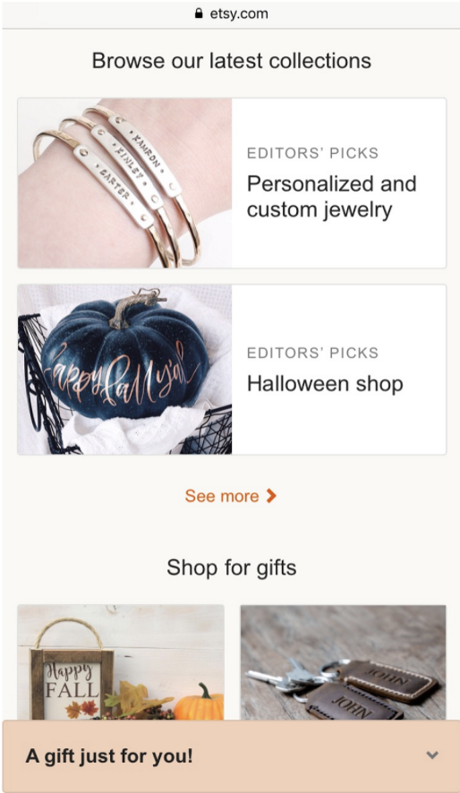
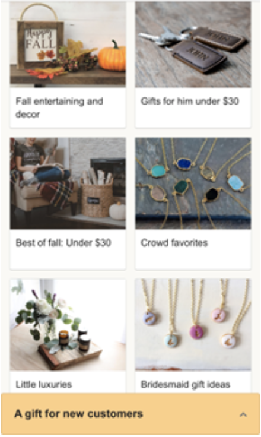
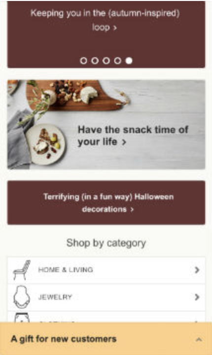
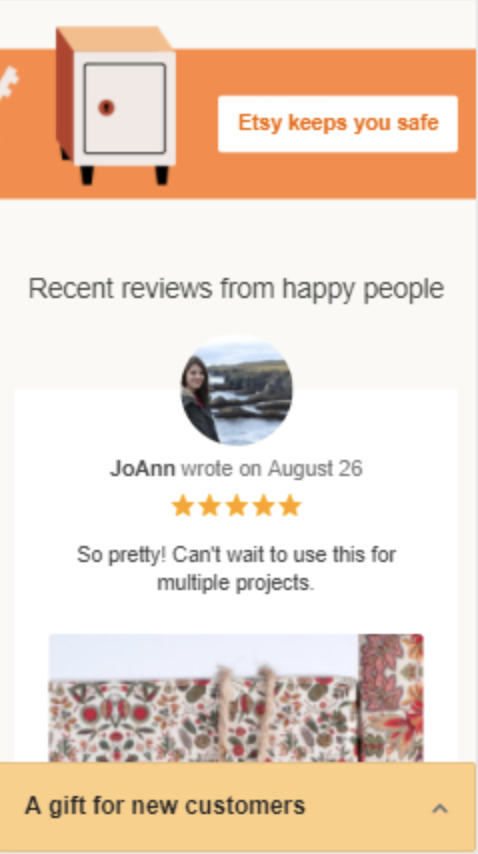
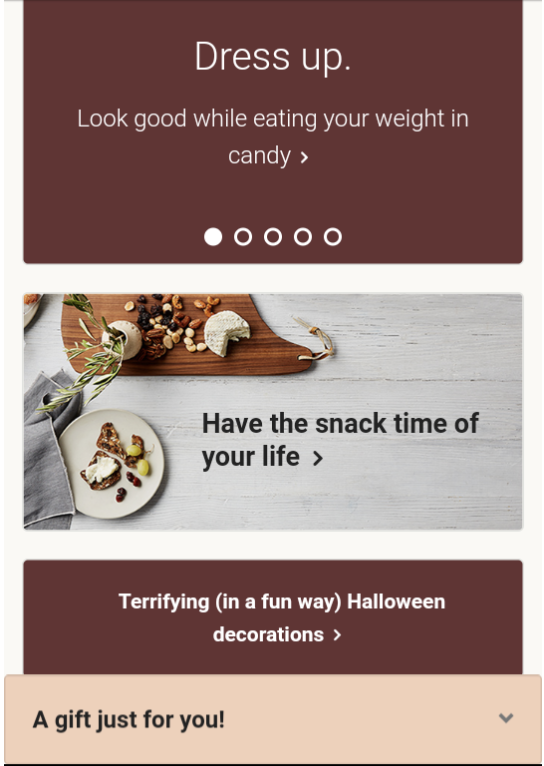
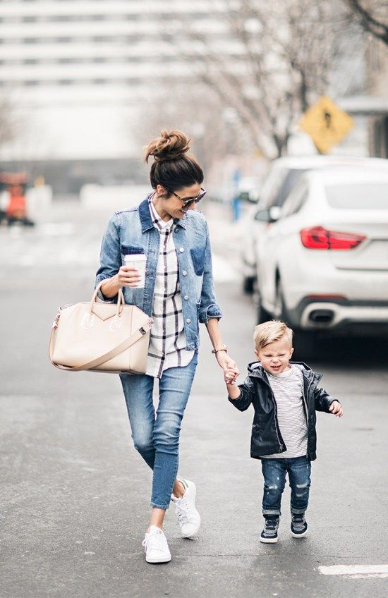

Design - Analysis Assessment
etsy.com
Design Principles
Proximity — Kristy Prince
Proximity is a design principle that pulls from grouping and white space. This image show how this sight uses grouping with boundaries to guide our eyes to these specific images. This grouping also helps the user easily find things that are closely related to each other because they are near each other in the grouping. White space is also found in the image as the two groups are separated by a uniform about of white space as well as the images themselves. This helps the user identify the two separate groups easily and makes it easier for them to find the specific image they are looking for easily. The user that is visiting this site can also know that when he clicks on an image in the “shop for gifts” area they will be directed to different gifts they could potentially buy and not find, for example, a template for a crocheting project.
Alignment — Suyeon Yang
Alignment is one of the part of the effective design for website. It makes target audience can find what they want to access easily. So, it is easy to go for whatever they want such as, navigation, sidebars, sections, asides, headers and footers in the websites with principle of alignment. These images are belonged to Shop for gifts section. We can notice that each image has different topics so, customers who are interested in gifts can look up their interesting products easily. Also, same size of images and letters with same font make website be stable.
Repetition — Levi Sargeant
When you look at the use of color and shapes within Etsy’s website, you will see the principle of repetition that this site uses very effectively. On the note of the color, orange (and some lighter shades of that color) and brown are used repeatedly. It feels very appropriate for the season that is happening as of this writing! The use of squares to contain information like the products being sold along with categories (each symmetrically stacked vertically) helps give a sense of unity that makes navigating the website all the more effective. Through the repetition of the shapes, this website organizes its content effectively.
Contrast — Colby Smith
The Etsy website uses an off-white background as a base. The logo and theme color of Etsy is a soft orange that stands out from the white background. The orange isn’t harsh or too bright, letting the user look at it without straining their eyes. The bold bar shown in this screenshot calls the user's attention.
Typography — Marissa Page
Typography is the primary method of delivering content to the viewer, so it’s clear why it’s so important to get right. This is a good example of typography because even though this is being viewed on a phone, the fonts have adjusted to be big enough to read without any trouble. Despite the fact that they only used one sans-serif font, they still added variety by using different weights. It’s true that it isn’t usually good to center too much text, but in this case centered text goes along with the theme, and they don’t overuse it. One advantage of sans-serif fonts is that it it is a very easy font to recognize words at a glance. This increases usability as well because users are able to quickly find what they’re looking for.
Site Purpose Statement
A site for both business and customers to create, find, and sell custom items on trend. A community of independent sellers and buyers to explore new ideas and share creations.
Target Audience
- Age: 14-35 years old
- Occupation: Stay-at-home and students
- Income: middle class $10,000 - $40,000/year
- Other: Inclined to crafts and creativity. Sellers are usually sel employed.
Persona
- Name: Tina Tracer
- 
- Occupation: Stay-at-home mom
- Primary Device: iPhone 6S Plus
- Quote: "I can totally make that."